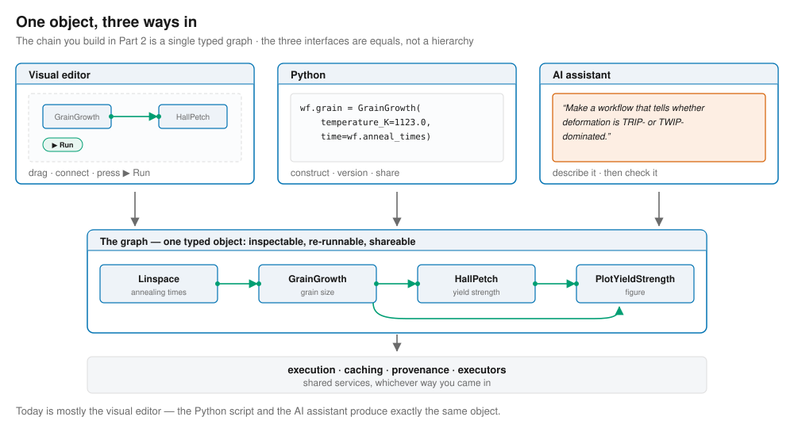
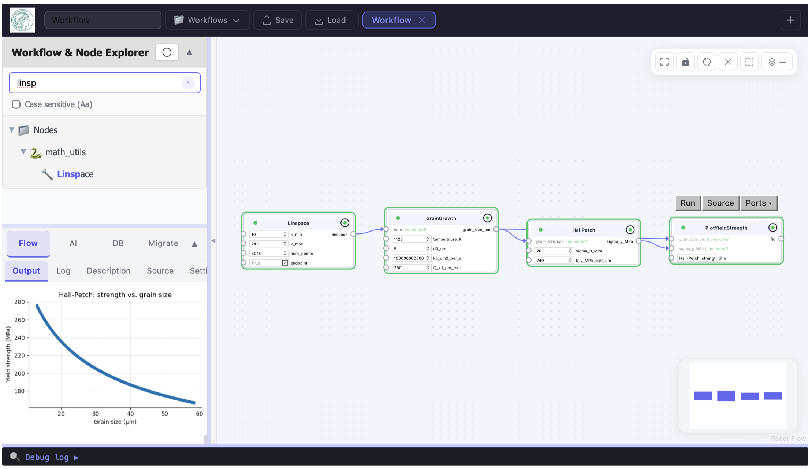
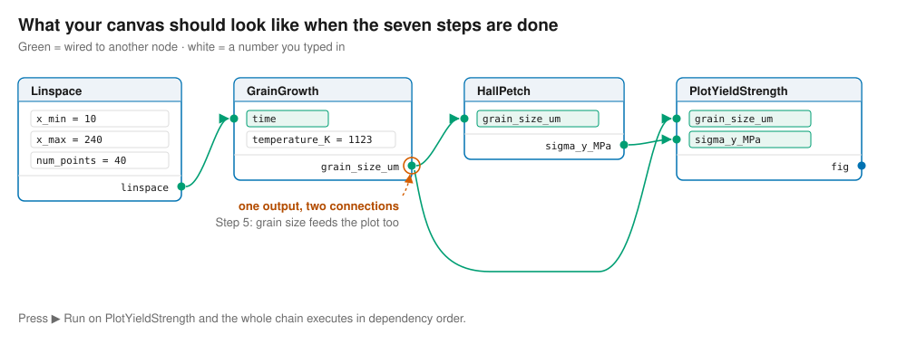
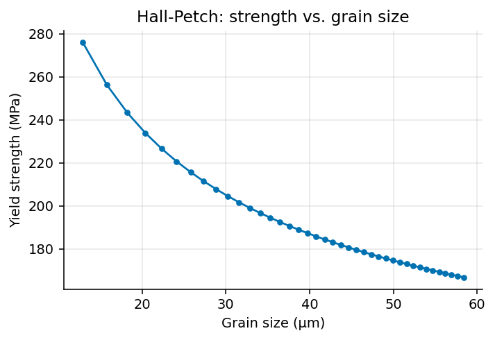
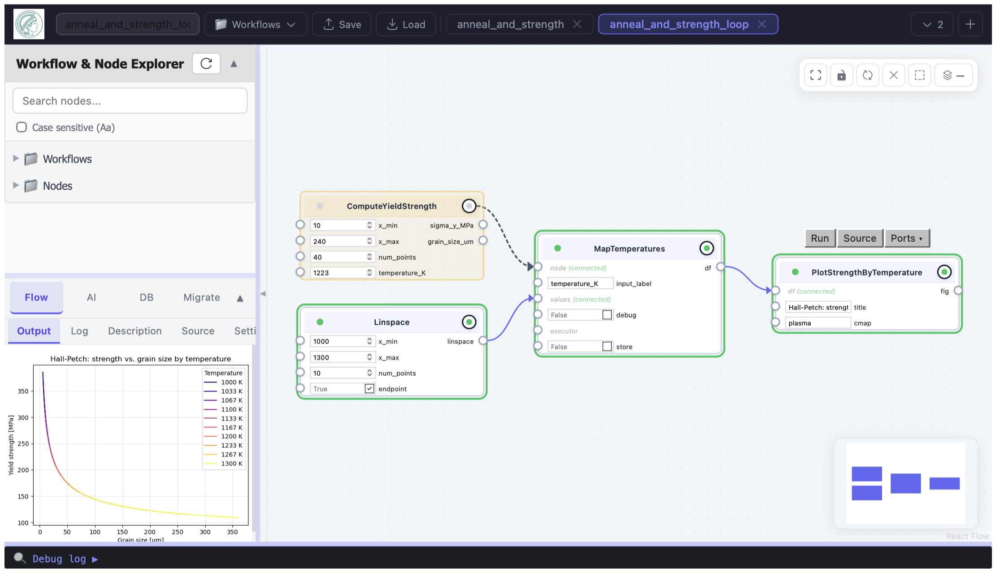
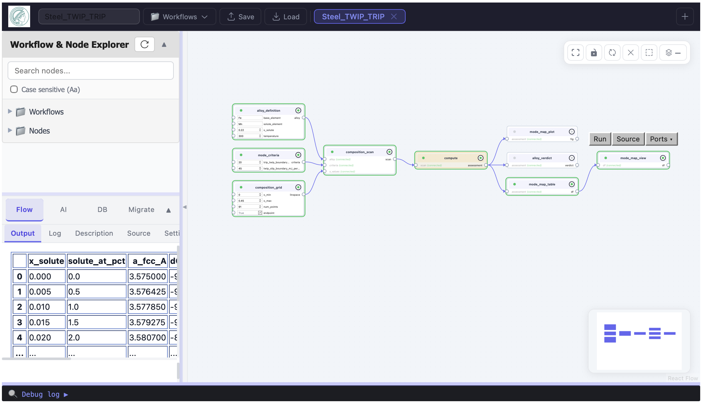
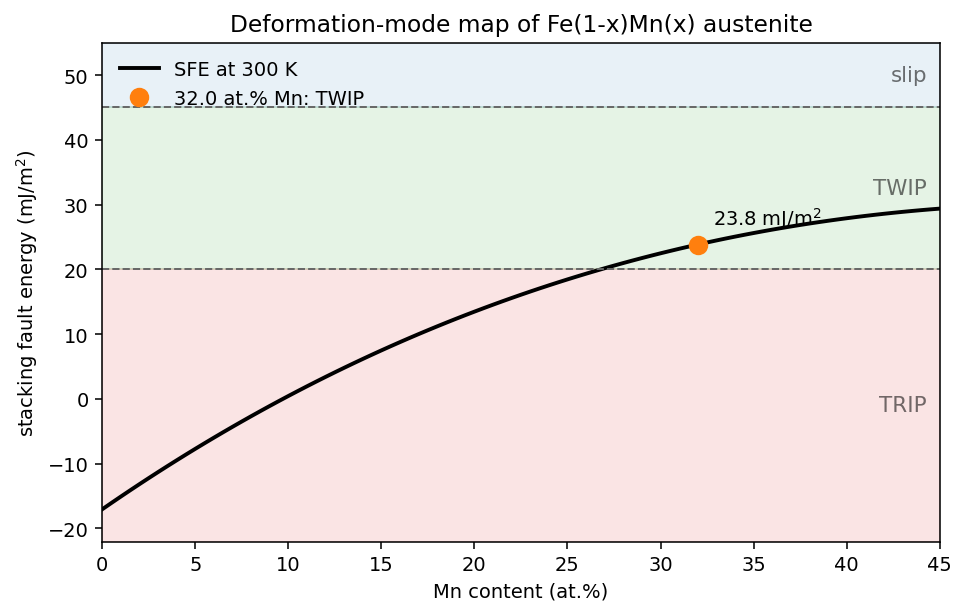
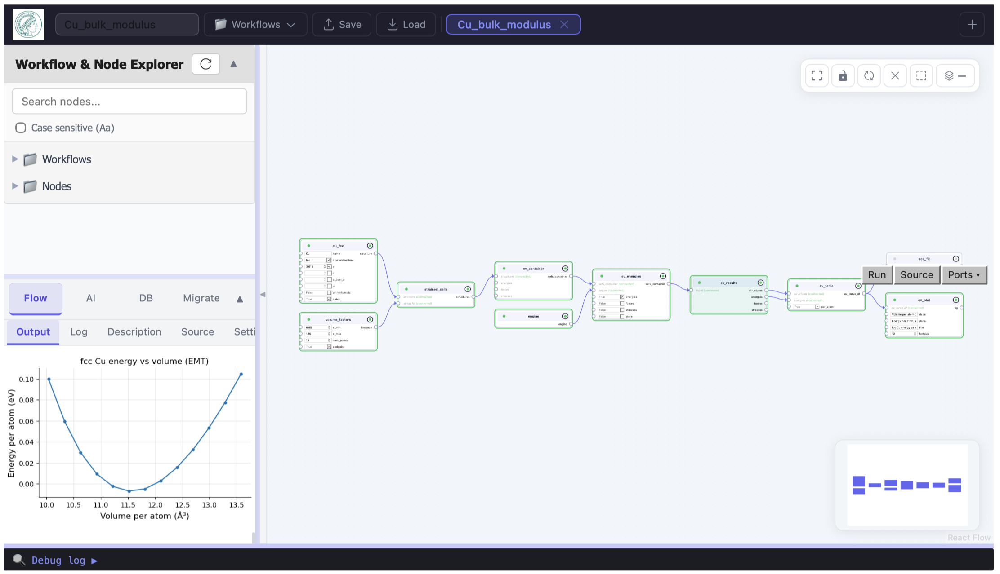

Building materials workflows without writing code#
A hands-on introduction to pyiron aiflow#
Presenters: Dr. Jan Janssen, Prof. Dr. Jörg Neugebauer, Max Planck Institute for Sustainable Materials
The objective of this session is that at the end you will have:
built a complete process–property model yourself, in a visual editor;
run a real simulation related to materials design and changed key process parameters to understand their impact on materials properties;
seen a workflow that an AI assistant wrote from a single sentence — and, more importantly, seen how to check it.
Part |
Task |
|---|---|
0 |
Why an explicit workflow layer |
1 |
Open the editor |
2 |
Build a workflow by hand |
3 |
Group it, sweep it, and see the code it wrote |
4 |
An AI-generated workflow, and what that means for research |
5 |
Where to go next |
Part 0 — Why an explicit workflow layer#
A materials property is almost never one calculation. It is a chain:
composition / process data → model → property → decision
In day-to-day practice that chain lives in three scripts, a spreadsheet, and one person’s head. That works, right up until it doesn’t. Five things break, and they will all be familiar:
What breaks |
How it shows up |
|---|---|
Provenance |
A number is in a report. Which potential, which mesh, which temperature produced it? Nobody can say. |
Reuse |
The same Hall–Petch fit gets retyped for every project, slightly differently each time. |
Parameter studies |
A |
Handover |
The chain leaves the company when the person does. |
Scale-out |
Moving from a laptop to a compute cluster means touching the science code. |
A workflow framework fixes these by making the chain itself an object — something that exists, can be looked at, and can be handed to someone else. Once the chain is an object rather than a habit, it is inspectable, re-runnable, cacheable, transferable, parallelisable, and comparable between two versions.
And you do not have to write code to build one. In aiflow, the chain is a graph, and that one graph has three interfaces:

Today is mostly the visual editor. The Python and the AI assistant will show up at the end — and you will see that they are producing exactly the same thing you built by hand.
Part 1 — Open the editor#
Run the cell below. (Click it and press Shift + Enter. That is the only keyboard skill this session requires.)
from pyironflow import PyironFlow
PyironFlow()
<pyironflow.gui.PyironFlow at 0x7aa8eb7b3a10>

What you are looking at#
Left — the node browser. A searchable library of ready-made building blocks, in two sections:
Nodes — individual operations (build a crystal, fit a curve, apply a potential).
Workflows — complete, saved chains that other people have built.
Middle — the canvas. Where your workflow lives.
Right — the inspector, with tabs: output (results), log (what happened), description (what this workflow is for), source, settings.
Top-right of the canvas — buttons to re-tidy the layout, Clear the canvas, Group selected nodes, and Convert to Python code.
Top bar — the workflow’s name, Save, Restore, and + to open another
workflow in a new tab.
The only three concepts you need#
Term |
What it means |
|---|---|
Node |
One step. It takes some inputs and produces some outputs. |
Port |
One input or one output of a node — the little dots on its edge. |
Edge |
A line saying “this result becomes that input.” |
And one rule that explains the rest:
Pressing ▶ Run on a node runs everything that node depends on, first.
There is no separate “run the whole workflow” button, because there does not need to be. Run the last node and the whole chain executes in the right order. Run it again after changing one number and only the affected part is recomputed.
Part 2 — Build a workflow by hand#
This is the main exercise. Use the empty canvas above.
The model: a steel is annealed; its grains coarsen; coarser grains mean lower yield strength. We want the strength as a function of the annealing schedule.
Here is the target — what your canvas should look like once the seven steps below are done:

Step by step#
1. The annealing times.
In the search box on the left, type Linspace. Drag it onto the canvas.
Set x_min = 10, x_max = 240, num_points = 40 — annealing times from 10 minutes
to 4 hours.
Why a node and not just a list of numbers? Because now the range is part of the workflow. Anyone who opens it can see it and change it — it isn’t buried inside a script.
2. The grain-growth model.
Search for GrainGrowth and drag it on. Now connect them: click and drag from the
linspace output dot on the right of the Linspace node, to the time input dot on
the GrainGrowth node. A line appears — that is your first edge.
Set temperature_K = 1123 (850 °C).
3. Run it early. Press ▶ Run on the GrainGrowth node and look at the output tab. You should see an array of grain sizes, rising from about 12.9 µm to about 58.4 µm.
Notice that you never ran the Linspace node. aiflow worked out that it was needed and ran it for you. That is the dependency rule doing its job.
4. The strength model.
Drag on HallPetch. Connect GrainGrowth.grain_size_um → HallPetch.grain_size_um.
5. The plot.
Drag on PlotYieldStrength. This one needs two connections:
GrainGrowth.grain_size_um→grain_size_umHallPetch.sigma_y_MPa→sigma_y_MPa
Press ▶ Run on the plot node. The figure appears in the output tab: yield strength falling from roughly 276 MPa to 167 MPa as the grains coarsen.
6. Now change something.
Set temperature_K = 1223 and press ▶ Run again. Watch the downstream nodes mark
themselves as out of date, then recompute. The strength drops further — the hotter
anneal coarsens the microstructure more.
7. Save it.
Type a name — anneal_and_strength — in the top bar and press Save. It now appears
under Workflows in the left-hand browser, and your colleague can open it by name.
Stop and notice what just happened#
You built a complete, documented, re-runnable process–property model. It is saved, it is shareable, and every assumption in it — the temperature, the time range, the Hall–Petch constants — is visible on screen rather than buried in someone’s script.
The only thing you typed was numbers.
Part 3 — Group it, sweep it, and see the code it wrote#
Grouping: making a reusable process step#
Click the GrainGrowth node, then shift-click HallPetch so both are selected. Press
Group selected nodes.
The two nodes collapse into one. You now have a single “anneal and strengthen” step with a temperature and a time going in and a strength coming out. Use Expand to look inside it, Collapse to close it again, Ungroup to undo.
This is how a piece of your group’s know-how becomes a reusable component. The internals are still there and still auditable — they are just not in the way any more.
Sweeping: the parameter study you didn’t have to write#
(Watch this one — your presenter will demonstrate it.)
Drag on an IterToDataFrame node. Connect your new group node into its node port (it
draws as a dashed line — it means “this is the thing to repeat”), set
input_label = "temperature_K", and feed its values from a second Linspace.
Run it. You get a table of yield strength against annealing temperature.
Two things worth pointing out:
The swept values come from a node, not a typed-in list, so the range stays a visible, editable part of the workflow.
Every node has an executor port (under the Ports ▾ menu). Wire a cluster executor into it and this same graph runs its 40 cases in parallel on a compute cluster. The science part does not change at all. This is the step that is normally a rewrite.
The reveal#
(Not part of our hands-on session but you may later run it.)
Press Convert to Python code.
The workflow you just built by dragging appears as clean, readable Python. You have been writing code all along — you just did it with a mouse. If you ever want to read it, edit it, put it under version control, or send it to a colleague who prefers text, it is right there.
It works in the other direction too. Here is that same workflow written directly in Python:
from core import Workflow
from pyiron_nodes.math_utils import Linspace
from pyiron_nodes.tutorial.heat_treatment import GrainGrowth, HallPetch, PlotYieldStrength
wf = Workflow("anneal_and_strength")
wf.anneal_times = Linspace(x_min=10, x_max=240, num_points=40)
wf.grain = GrainGrowth(temperature_K=1123.0, time=wf.anneal_times)
wf.strength = HallPetch(grain_size_um=wf.grain)
wf.plot = PlotYieldStrength(grain_size_um=wf.grain, sigma_y_MPa=wf.strength)
wf.run()
d = wf.grain.outputs.grain_size_um.value
s = wf.strength.outputs.sigma_y_MPa.value
print(f"grain size {d[0]:.1f} um -> {d[-1]:.1f} um")
print(f"yield strength {s[0]:.0f} MPa -> {s[-1]:.0f} MPa")
grain size 12.9 um -> 58.4 um
yield strength 276 MPa -> 167 MPa
wf.plot.outputs.fig.value

Five lines of Python and seven drag-and-drop steps produce the same object. Send this workflow to the editor and it appears on the canvas, laid out and ready to run.
The editor opens with two tabs: your anneal_and_strength workflow on the left, and anneal_and_strength_loop — the swept version from Part 3 — on the right.
PyironFlow([wf, "anneal_and_strength_loop"])
<pyironflow.gui.PyironFlow at 0x7aa72c19d190>

One more thing the graph buys you: caching#
Every node has a store switch in its Ports ▾ menu. Turn it on and the node’s result is filed away under a fingerprint of its inputs. Next time anything asks for the same computation with the same inputs, it is loaded instead of recomputed — and the node lights up to tell you it came from cache.
For a 30-millisecond Hall–Petch fit this is irrelevant. For a three-hour DFT calculation that sits upstream of a plot you keep re-tweaking, it is the difference between a workflow you use and one you avoid. (It needs a database server, so we are describing it rather than running it today.)
Part 4 — An AI-generated workflow#
The question#
High-manganese austenitic steels get their remarkable combination of strength and ductility from how they deform. Two mechanisms compete, and which one wins is set by a single quantity — the stacking fault energy (SFE):
SFE |
Dominant mechanism |
|
|---|---|---|
< 20 mJ/m² |
TRIP |
strain-induced γ → ε martensite |
20 – 45 mJ/m² |
TWIP |
mechanical twinning |
> 45 mJ/m² |
ordinary slip |
and the SFE follows from composition through the Olson–Cohen/Allain model:
Getting from “here is my composition” to “here is the deformation mechanism” means chaining half a dozen models together. That is precisely a workflow.
The prompt#
The workflow you are about to open was not written by a person. It was generated from one sentence:
“Make a workflow that tells for a given
Fe_(1-x)X_xhigh-strength steel whether its deformation process is dominated by the TRIP or the TWIP process.”
That sentence went into the AI Assistant panel in this same editor. The assistant searched the node library, drafted a graph, ran it, read the errors, repaired them, re-ran, and finally tidied the layout. Its controls are the ones you would expect: which model, create a new workflow or edit the open one, just check that it builds or insist that it actually executes, and how many repair attempts to allow.
(We generated it ahead of time so we are not waiting on an API during the session.)
PyironFlow(["Steel_TWIP_TRIP"])
<pyironflow.gui.PyironFlow at 0x7aa72c36ba10>

Try it#
Read the description tab. The assistant documented its own workflow.
Press ▶ Run on
alloy_verdictand read the verdict in the output tab.Open
mode_map_plotandmode_map_table— the SFE across the whole composition range, with the TRIP / TWIP / slip regions marked.Press Expand on the
computenode. Those eight inner nodes are the physics: lattice parameter → planar packing density → driving force ΔG → SFE → martensite accessibility → classification. Every intermediate is a port you can click on.Change the answer: in
alloy_definition, setx_solutefrom0.22to0.32and re-run. The verdict flips from TRIP-dominated to TWIP-dominated.Set
solute_elementtoAland re-run. Notice that the verdict now prints a calibration warning about itself.
# The same thing headless, so the numbers are on the page for anyone reading later.
from core import Workflow
from pathlib import Path
from core.config import paths
# The shared workflow library - exactly what the browser's "Workflows" section shows.
WORKFLOWS = Path(paths.WORKFLOW_STORAGE)
from IPython.display import Markdown, display
steel = Workflow.load(WORKFLOWS / "Steel_TWIP_TRIP.py")
steel.alloy_definition.inputs.x_solute.value = 0.22
steel.run()
display(Markdown(steel.alloy_verdict.outputs.verdict.value))
Fe(1-x)Mn(x), x = 0.220 (22.0 at.% Mn) at 300 K
Verdict: TRIP-dominated (strain-induced gamma -> epsilon martensite)
Stacking fault energy: 15.6 mJ/m^2
Driving force dG(gamma->epsilon): -421 J/mol (epsilon stable)
Md(epsilon): 445 K – deformation temperature is below it, so the transformation can be triggered mechanically
TRIP/TWIP boundary of this system: x = 0.268 (26.8 at.% Mn); the alloy sits -4.8 at.% from it
steel.alloy_definition.inputs.x_solute.value = 0.32
steel.run()
display(Markdown(steel.alloy_verdict.outputs.verdict.value))
Fe(1-x)Mn(x), x = 0.320 (32.0 at.% Mn) at 300 K
Verdict: TWIP-dominated (mechanical twinning)
Stacking fault energy: 23.8 mJ/m^2
Driving force dG(gamma->epsilon): -283 J/mol (epsilon stable)
Md(epsilon): 417 K – deformation temperature is below it, so the transformation can be triggered mechanically
TRIP/TWIP boundary of this system: x = 0.268 (26.8 at.% Mn); the alloy sits +5.2 at.% from it
steel.mode_map_plot.outputs.fig.value

Why this matters for AI-guided research#
This is the part worth taking back to the office.
1. An LLM can already write you a script. That is not the problem. The problem is what you get: a few hundred lines you have to read carefully before you can trust the number at the bottom, that don’t compose with the next script it writes, and that keep no record of what was actually run. You have traded “I did the work” for “I have to review the work,” and reviewing is often the slower half.
2. A node library is a constrained vocabulary. When the assistant builds a graph, it selects from named, typed, documented operations instead of inventing API calls from memory. Connecting an energy where a structure is expected is rejected when the graph is built — not silently coerced into a wrong number two hours later.
3. The graph is something a machine can check. Because the workflow is a data structure, an automated harness can ask: does it parse? does it construct? does it execute? are the values physically plausible? does it survive being saved and reloaded? Each failure goes back to the model as a specific, actionable error. Verification is inside the loop, not something you do afterwards.
4. Auditability is the point, not a bonus.
A number from an agent is worth nothing if you cannot interrogate how it was produced. In
that steel workflow, ΔG, the packing density, the SFE, and M_d are each a port you can
click. You audit the model, not just the answer. This is the thing that makes
human-in-the-loop actually possible rather than merely aspirational — and you saw a
concrete case of it in Part 4, where an unsupported fit was hiding behind a plausible
number until you looked at the curve.
5. One representation, three consumers. You on the canvas, your colleague in Python, the agent through the node library — all working on the same object. That is why an AI-proposed workflow can be handed to a person for checking, and a person’s workflow handed to an agent for extension. Without a shared representation, each handover is a translation, and every translation loses something.
6. Provenance and caching are what make autonomous exploration affordable. An agent exploring hundreds of compositions recomputes only what actually changed, and every number it reports traces back to the graph that produced it.
So read this particular result critically#
The workflow above is a genuinely useful screening tool and an unfinished physical model. Both things are true, and the graph is what lets you tell them apart:
The thresholds are a modelling choice, not a law of nature. The assistant put them in their own
mode_criterianode rather than hiding them inside a function, so you can see them and argue with them.The parameters are calibrated for Fe–Mn. For other solutes they are effective values that reproduce the reported dSFE/dx slope but not the absolute SFE — which is why the verdict prints its own caution when you switch to Al.
The magnetic contribution is folded into the linear coefficients, so the workflow does not reproduce the known SFE minimum near 12 at.% Mn.
None of these are hidden. You found them by reading nodes. That is the difference between a result you can put in front of a customer and a number from a black box.
Part 5 — Where to go next#
Everything you learned today, in one list: drag a node on · connect two ports · type a number · press ▶ Run · select and Group · Save · Convert to Python code.
For further examples, look at the appendix.
That is the whole interface. Everything else is which nodes you reach for.
To keep going:
Use a colleague’s work |
The Workflows section of the browser. Open one, read its description, run it, change a number. |
Contribute your own node |
Right-click in the Nodes tree → new module / new node. You get a template to fill in. Today’s |
Draft one with AI |
The AI Assistant panel. Describe what you want in a sentence — then check what it built, node by node. |
Read the Python side |
|
The one idea to take away: the value is not that the graph runs. Your scripts already run. The value is that the chain became an object — one that you can hand to a colleague, to a cluster, or to an AI assistant, and get back something you are still able to check.
Appendix — A real simulation, same machinery#
So far the nodes have been simple formulas. Nothing changes when the nodes are doing real physics. Run the cell below to open a prepared workflow.
Read the description tab first — every saved workflow carries its own documentation.
This one measures the bulk modulus of copper the way you would in a simulation study:
Bulk(Cu) ──▶ strain the cell ──▶ compute energy ──▶ table ──▶ fit ──▶ plot
▲ ▲ (B₀, V₀)
Linspace EMT
(±15% volume) (the engine)
Try it#
Press ▶ Run on
eos_fit. The whole chain executes in under a second. You should get a₀ ≈ 3.590 Å (experiment: 3.615) and B₀ ≈ 134 GPa (experiment: 140).Run
ev_plotto see the energy–volume curve the fit is based on.Now change the material: in the
cu_fccnode, changenamefromCutoNi, and press ▶ Run again. You get a₀ ≈ 3.487 Å and B₀ ≈ 177 GPa (experiment: 180).
One field. Different material. Same workflow.
PyironFlow(["Cu_bulk_modulus"])
<pyironflow.gui.PyironFlow at 0x7aa71f012c30>

# The same thing headless, so the numbers are on the page for anyone reading later.
from core import Workflow
from pathlib import Path
from core.config import paths
# The shared workflow library - exactly what the browser's "Workflows" section shows.
WORKFLOWS = Path(paths.WORKFLOW_STORAGE)
aa
for element in ["Cu", "Ni"]:
wf_eos = Workflow.load(WORKFLOWS / "Cu_bulk_modulus.py")
wf_eos.cu_fcc.inputs.name.value = element
wf_eos.run()
V0 = wf_eos.eos_fit.outputs.V0.value
B0 = wf_eos.eos_fit.outputs.B0_GPa.value
table = wf_eos.ev_table.outputs.ev_curve_df.value
bracketed = table.volume.min() <= V0 <= table.volume.max()
print(
f"{element}: a0 = {(4 * V0) ** (1 / 3):.3f} A "
f"B0 = {B0:.1f} GPa minimum inside the scanned range: {bracketed}"
)
Cu: a0 = 3.590 A B0 = 133.6 GPa minimum inside the scanned range: True
Ni: a0 = 3.487 A B0 = 177.5 GPa minimum inside the scanned range: True
⚠️ Before you trust either number, look at the plot#
That last column is not decoration. A Birch–Murnaghan fit only means anything if the energy minimum lies inside the volumes you actually computed. If it doesn’t, the fit extrapolates — and it will still hand you a confident-looking number.
This is not hypothetical. When this workflow was first written, the volume scan was
±6 %. Fine for copper. But switch to nickel, whose equilibrium volume is 9 % smaller, and
the minimum falls off the end of the scan: the fit reports 181.6 GPa instead of
177.5 GPa, with no warning at all. The scan is ±15 % now for exactly that reason. Set
the element to Ag or Au and you will break it again — those need a different starting
lattice constant too.
The graph did not prevent that mistake. It made it visible. The intermediate table and the E–V curve are named, clickable outputs, not temporary variables inside somebody’s script. Hold on to this — it is the whole argument in Part 5, in miniature.
And the engine is just another node#
EMT is a fast, approximate potential — it is here so the workflow runs instantly.
Replace that one node with a machine-learning potential (e.g. GRACE) or a DFT engine and the physics
changes while the shape of the workflow does not. The EOS_Bulk_modulus workflow in
the browser is this same graph driven by a foundation potential. This is also where the
store cache stops being a nicety.
© 2026, Jörg Neugebauer, Max Planck Institute for Sustainable Materials